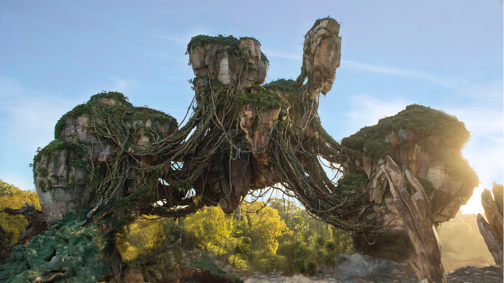

As famosas montanhas flutuantes de Pandora.
As montanhas flutuantes são um dos lugares mais impressionantes de Pandora. Elas parecem desafiar a gravidade e criam uma paisagem única no universo de Avatar.
Nessa região vivem os Ikrans, criaturas voadoras usadas pelos Na’vi para atravessar os céus.
